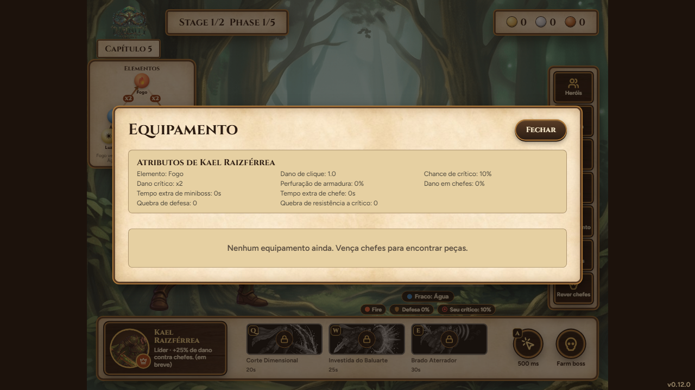
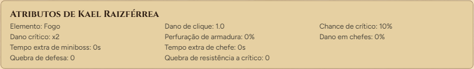
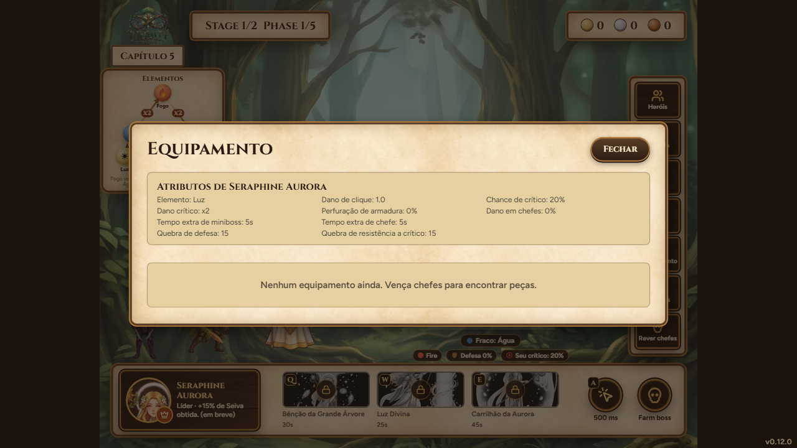
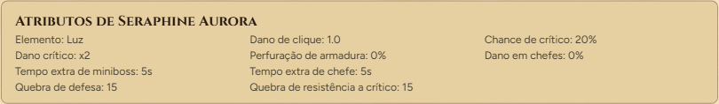
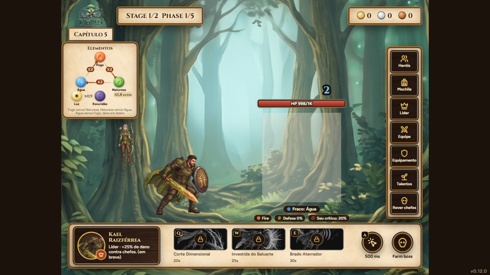
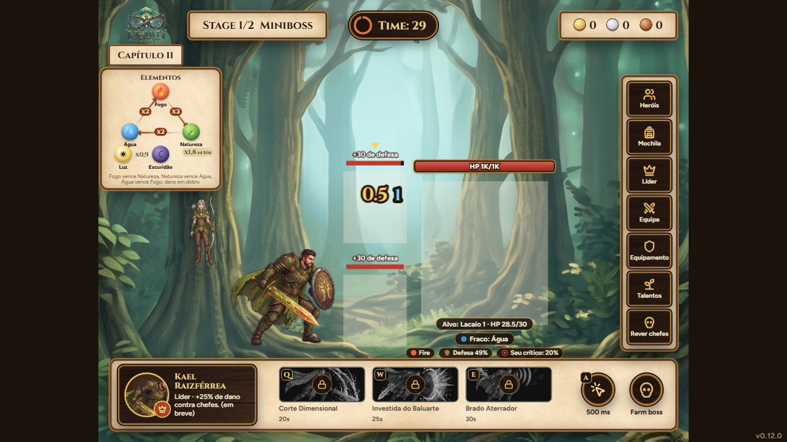

Polimento de dívida técnica
As duas linhas de quebra ficam lado a lado na última linha do painel de atributos, sem corte, com e sem passivas. O número do aliado ficou sólido, azul claro com contorno escuro de 10 px, legível sobre a floresta e sobre um lacaio. Medido na captura 03: contorno contra a floresta mais clara 3,83:1 (mínimo exigido 3:1) e preenchimento contra o contorno 11,18:1. Nenhum achado bloqueante; há uma sugestão sobre o lado mais escuro da floresta.
Fidelidade à spec
- ✓Linhas de quebra lado a lado na última linha (3 colunas), tempos na linha acima
TDP-01 AC 1, 2, Edge 1 - ✓Ordem, textos e 10 linhas do painel inalterados; nenhuma linha cortada, Figtree 13 px
TDP-01 AC 3, 4 - ✓Número do aliado #7fd4ff, 28 px, contorno #1c120c de 10 px, também em um lacaio
TDP-03 AC 1, Edge 2 - ✓Contorno contra a amostra mais clara da floresta de pelo menos 3:1 (3,83:1) e preenchimento contra o contorno de pelo menos 3:1 (11,18:1)
TDP-03 AC 3, Q5
Contraste do número do aliado (Q5)
Medido em pixels das capturas 03 e 04 (WCAG 2.x, texto grande de 28 px em negrito pede 3:1). Cores lidas da imagem: preenchimento #7fd4ff, contorno #1c120c.
- 03Amostras da floresta 2 px fora do contorno: esquerda
#6f755c(3,83:1), direita#424f40(2,12:1), topo#4d5847(2,46:1), base#5b634b(2,92:1). Mais clara: esquerda. Contorno contra a mais clara: 3,83:1. Preenchimento contra contorno: 11,18:1. Ambas passam de 3:1. - 04Número sobre o lacaio (placeholder claro no ambiente de teste): esquerda
#d6ede5(14,99:1), direita#cde7df(14,10:1), topo#d6ece3(14,87:1), base#d2e9e0(14,43:1). Preenchimento contra contorno: 11,18:1. - cmpComparado com
hero-team/ui-review/09b-field-ally-hit-desktop.png: antes o número aparecia cinza e esmaecido, quase fundido à floresta; agora é sólido e se lê de imediato.
Capturas
Equipamento: painel de atributos




Campo de batalha: número do aliado


Achados
Nenhum achado.
Sugestões
- ✦A regra do Q5 mede o contorno contra a amostra mais clara da floresta, que é o caso mais fácil para um contorno escuro. Nas amostras mais escuras (direita 2,12:1, topo 2,46:1, base 2,92:1) o contorno quase se funde ao fundo, e quem carrega a leitura é o preenchimento azul claro (11,18:1 contra o contorno). Não bloqueia, pois a spec foi aprovada assim; numa próxima spec vale medir também contra a amostra mais escura.
Console e recursos
Erros do console não foram lidos: a extensão Claude in Chrome não estava conectada. Os cenários do Playwright rodaram sem falha (4 de 4 no desktop) e nenhuma imagem apareceu quebrada nas capturas.